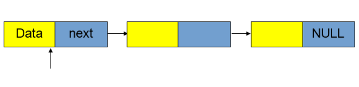
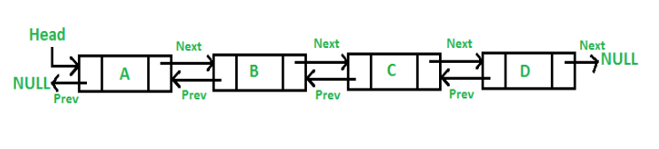
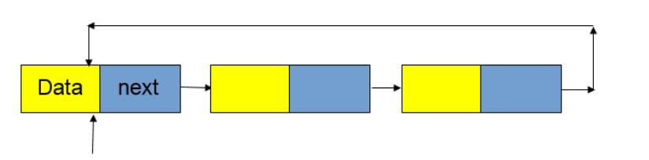
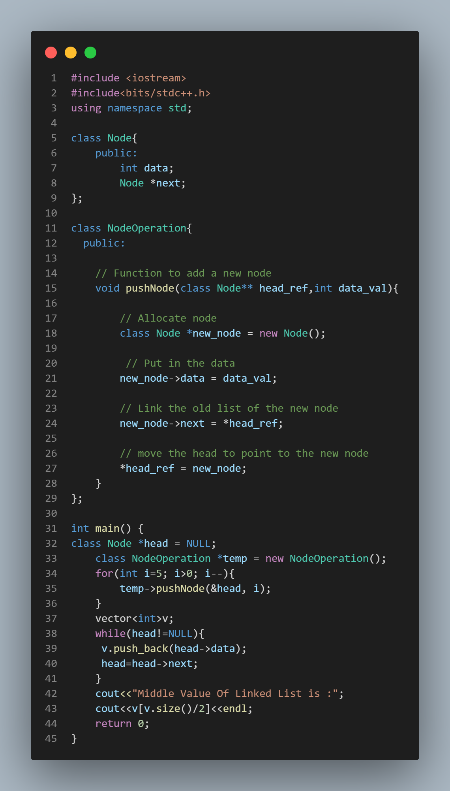

LinkedList Datastructure
A linked Lists is a linear datastructure that consists of a group of nodes. Its elements are stored randomly throughout memory location, unlike an array.
Each node contains two fields
* Data stored at that particular address
* The pointer contains the address of the next node.
A pointer to null is present at the linked list's final node to indicate that it has ended. In a linked list, the first node is typically referred to as the head node and the last node as the tail node.
Types of Linked List:-
1) Singly LinkedList
2) Double LinkedList
3) Circular LinkedList
1) Singly LinkedList:-
A Singly Linked List contains a node that has both the data part and pointer to the next node. The last node of the Singly Linked List has a pointer to null to represent the end of the Linked List. Traversal to previous nodes is not possible in singly Linked List i.e We can not traverse in a backward direction.

2) Double LinkedList:-
Doubly Linked List contains a node that has three entries: (1) data part, (2) pointer to the next node, and (3) pointer to the previous node. We can traverse in both forward and backward directions in doubly Linked Lists.

3) Circular LinkedList:-
Last item contains link of the first element as next and the first element has a link to the last element as previous.

Why LinkedList over array?
1) The size of an array is fixed. We must know the size of the array at the time of its creation, hence it is impossible to change its size at runtime.
2) Inserting a new element in an array of elements is expensive because we need to shift elements to create room for new elements to insert.
Advantages of LinkedList:-
i) Insertion and deletion operations are simple to implement and inexpensive because they do not need element shifting.
ii) They have a lively quality. As a result, we can adjust their size as needed.
Disadvantages of Linked List:-
i) Random access of an element is not possible in Linked Lists, we need to traverse Linked List from starting to search an element into it.
ii) It is relatively slow to process in comparison to an Array.
CP Problem :-
Given a singly linked list of N nodes.The task is to find the middle of the linked list. For example, if the linked list is 1-> 2->3->4->5, then the middle node of the list is 3.
If there are two middle nodes(in case, when N is even), print the second middle element.
Example :-
Input: LinkedList: 1->2->3->4->5
Output: Middle Value Of Linked List is : 3
Expected Time Complexity: O(n), for traversingl
Expected Auxiliary Space: O(n).for vector.
Constraints: 1 <= N <= 5000
Solution:-
Watch the video for understande more-